Mosh
(mobile shell)
Remote terminal application that allows roaming, supports intermittent connectivity, and provides intelligent local echo and line editing of user keystrokes.
Mosh is a replacement for SSH. It's more robust and responsive, especially over Wi-Fi, cellular, and long-distance links.
Mosh is free software, available for GNU/Linux, BSD, macOS, Solaris, Android, and Chrome. An iOS version is in testing.
Change IP. Stay connected.
Mosh automatically roams as you move between Internet connections. Use Wi-Fi on the train, Ethernet in a hotel, and LTE on a beach: you'll stay logged in. Most network programs lose their connections after roaming, including SSH and Web apps like Gmail. Mosh is different.
Makes for sweet dreams.
With Mosh, you can put your laptop to sleep and wake it up later, keeping your connection intact. If your Internet connection drops, Mosh will warn you — but the connection resumes when network service comes back.
Get rid of network lag.
SSH waits for the server's reply before showing you your own typing. That can make for a lousy user interface. Mosh is different: it gives an instant response to typing, deleting, and line editing. It does this adaptively and works even in full-screen programs like emacs and vim. On a bad connection, outstanding predictions are underlined so you won't be misled.
No privileged code. No daemon.
You don't need to be the superuser to install or run Mosh. The client and server are executables run by an ordinary user and last only for the life of the connection.
Same login method.
Mosh doesn't listen on network ports or authenticate users. The mosh client logs in to the server via SSH, and users present the same credentials (e.g., password, public key) as before. Then Mosh runs the mosh-server remotely and connects to it over UDP.
Runs inside your terminal, but better.
Mosh is a command-line program, like ssh. You can use it inside xterm, gnome-terminal, urxvt, Terminal.app, iTerm, emacs, screen, or tmux. But mosh was designed from scratch and supports just one character set: UTF-8. It fixes Unicode bugs in other terminals and in SSH.
Control-C works great.
Unlike SSH, mosh's UDP-based protocol handles packet loss gracefully, and sets the frame rate based on network conditions. Mosh doesn't fill up network buffers, so Control-C always works to halt a runaway process.
Recent News
- August 10, 2016: Mosh 1.2.6 released, with John Hood as release lead. New features include huge performance improvements, especially on large terminals, the ability to set a timeout to end dormant sessions automatically, and support for crypto libraries other than OpenSSL.
- August 10, 2016: The Mosh website moves to https://mosh.org. We continue to be grateful for hosting provided by the MIT Student Information Processing Board.
- June 15, 2016: Mosh for iOS (Blink) has its first alpha release.
- April 17, 2016: Termux (open source Linux environment for Android) adds a mosh 1.2.5 package.
- July 23, 2015: Mosh 1.2.5 released, with John Hood as release lead. New features include support for mouse modes and a reconfigurable escape character, and initial support for IPv6.
- May 31, 2015: Another team of Stanford students has reproduced some of the Mosh research paper's results.
- January 20, 2014: Mosh for Chrome, which brings Mosh to the Chrome browser and Chrome OS, is released. It can be installed here.
- August 9, 2013: JuiceSSH (SSH client for Android) adds official Mosh support — available on the Play Store
- April 14, 2013: Mosh has posted an Ideas List for interested contributors!
- March 27, 2013: Mosh 1.2.4 has been released. Changes largely include bug fixes, improved robustness, and added platform support (now on AIX and stock Solaris!). This version will be in Ubuntu 13.04 (raring).
- March 24, 2013: The Debian Project Leader switches to Mosh. Welcome, Stefano! We're proud to have you.
- March 14, 2013: Two teams of Stanford students have reproduced parts of the Mosh research paper on Stanford's Reproducing Network Research blog. Kanthi Nagaraj and Emily McMilin tested SSP's resilience to packet loss, and Ahmed Aljunied and Anand Atreya evaluated Mosh's predictive local echo.
- March 12, 2013: Mosh celebrates its first anniversary of 1.0. Hard to believe it's already been a year. We could not have done it without the hard work of many of you, especially Hari Balakrishnan, Keegan McAllister, Anders Kaseorg, Quentin Smith, Richard Tibbetts, Nelson Elhage, Christine Spang, Stefie Tellex, Joseph Sokol-Margolis, Waseem Daher, Bill McCloskey, Austin Roach, Greg Hudson, Karl Ramm, Alexander Chernyakhovsky, Peter Iannucci, Evan Broder, Neha Narula, Katrina LaCurts, Ramesh Chandra, Peter Jeremy, Ed Schouten, Ryan Steinmetz, Jay Freeman, Dave Täht, Larry Doolittle, Daniel Drown, Timo Juhani Lindfors, Timo Sirainen, Ira Cooper, Felix Gröbert, Luke Mewburn, Anton Lundin, Kevin Ballard, and Axel Beckert!
- November 2012: Mosh on the cover of Linux Magazine.
- Oct. 19, 2012: Mosh 1.2.3 has been released. Changes include more resilience to evil NATs, power savings for mobile clients, switching to OpenSSL's AES implementation, and a licensing exception to allow Mosh on Apple's app store. This version will be in Debian 7.0 (wheezy).
- Aug. 22, 2012: Mosh (and its tolerance for high packet loss) helps Iain Learmonth escape from an elevator.
Getting Mosh
The Mosh package should be installed on both the client and server. Please find your platform below for installation instructions.
Install from your package manager
macOS 10.9 or later
This is a standalone OS X package that will work on any supported Macintosh. However, if you are using a package manager such as Homebrew or MacPorts, we suggest using it to get Mosh, for better compatibility and automatic updates.
Windows
There is no "native" mosh executable for Windows available at this time. The Chrome version of Mosh is the easiest way to use mosh on Windows.
 Cygwin
Cygwin
C:\> setup.exe -q mobile-shell
Mosh on Cygwin uses OpenSSH and is suitable for Windows users with advanced SSH configurations.
Mosh is not compatible with Cygwin's built-in Windows Console terminal emulation. You will need to run Mosh from a full-featured terminal program such as mintty, rxvt, PuTTY, or an X11 terminal emulator.
Chrome / Chrome OS
 openSUSE 12.3 or later
openSUSE 12.3 or later
$ sudo zypper in mosh
Ubuntu 12.04 and later
$ sudo apt-get install mosh
The ppa:keithw/mosh-dev PPA tracks the development version of Mosh.
 OpenBSD
OpenBSD
# pkg_add mosh
Operating system logos are trademarks or registered trademarks and are displayed for identification only. The vendors shown aren't affiliated with and haven't endorsed Mosh.
Building from source
Compiling from Git
$ git clone https://github.com/mobile-shell/mosh $ cd mosh $ ./autogen.sh $ ./configure $ make # make install
Dependencies
| Name | Typical package |
|---|---|
| Protocol Buffers | protobuf-compiler, libprotobuf-dev |
| ncurses | libncurses5-dev |
| zlib | zlib1g-dev |
| utempter (optional) | libutempter-dev |
| OpenSSL | libssl-dev |
Security on new operating systems
Note that mosh-client receives an AES session key as an environment
variable. If you are porting Mosh to a new operating system, please make sure that a
running process's environment variables are not readable by other users. We have
confirmed that this is the case on GNU/Linux, OS X, and FreeBSD.
Usage
Replaces interactive SSH. Instant keystroke response, robust to roaming. But you'll need working UDP.
Typical usage
$ mosh chewbacca.norad.mil
Mosh will log the user in via SSH, then start a connection on a UDP port between 60000 and 61000.
Different username
$ mosh potus@ackbar.bls.gov
Server binary outside path
$ mosh --server=/tmp/mosh-server r2d2
The user can specify an alternate path for the mosh-server on the remote host. The server binary can even
be installed in the user's home directory.
Selecting Mosh UDP port
$ mosh -p 1234 darth
Useful when the server is behind a port-forwarder or NAT.
Selecting SSH port
$ mosh --ssh="ssh -p 2222" figrindan
Other SSH options
$ mosh --ssh="~/bin/ssh -i ./identity" fett
Disable instant echo
$ mosh --predict=never niennunb
The -n switch is a synonym. By contrast,
passing --predict=always or -a
will enable instant local echo even on low-delay
links.
With a command
$ mosh pello -- screen -dr
This reattaches to a long-running screen session.
Ending the connection
Normally, logout or exit on the remote host will close
the session. Mosh accepts the escape sequence Ctrl-^
. (typically typed with Control-Shift-6, then a
period) to end the connection forcibly. To send a
literal Ctrl-^, type Ctrl-^ ^.
Manual
More details can be found in
the mosh(1), mosh-client(1),
and mosh-server(1) manual pages.
Technical Info
Papers
The Mosh research paper describes the design and evaluation of Mosh in more detail than you may want. The paper was presented at the 2012 USENIX Annual Technical Conference, held June 13–15, 2012, in sunny Boston, Mass.
In addition, the Mosh: A State-of-the-Art Good Old-Fashioned Mobile Shell essay gives further information about the design principles behind Mosh, including the "prophylactic retransmission" technique. The essay was published in USENIX ;login: magazine, August 2012.
“ISO 2022 locking escape
sequences oh flying spaghetti monster please kill me
now.”
— actual USENIX peer review from the
Mosh paper.
(Why you should trust Mosh with your remote terminal needs: we worry about details so obscure, even USENIX reviewers don't want to hear about them.)
How Mosh works
Remote-shell protocols traditionally work by conveying a byte-stream from the server to the client, to be interpreted by the client's terminal. (This includes TELNET, RLOGIN, and SSH.) Mosh works differently and at a different layer. With Mosh, the server and client both maintain a snapshot of the current screen state. The problem becomes one of state-synchronization: getting the client to the most recent server-side screen as efficiently as possible.
This is accomplished using a new protocol called the State Synchronization Protocol, for which Mosh is the first application. SSP runs over UDP, synchronizing the state of any object from one host to another. Datagrams are encrypted and authenticated using AES-128 in OCB mode. While SSP takes care of the networking protocol, it is the implementation of the object being synchronized that defines the ultimate semantics of the protocol.
Roaming with SSP becomes easy: the client sends datagrams to the server with increasing sequence numbers, including a "heartbeat" at least once every three seconds. Every time the server receives an authentic packet from the client with a sequence number higher than any it has previously received, the IP source address of that packet becomes the server's new target for its outgoing packets. By doing roaming “statelessly” in this manner, roaming works in and out of NATs, even ones that may themselves be roaming. Roaming works even when the client is not aware that its Internet-visible IP address has changed. The heartbeats allow Mosh to inform the user when it hasn't heard from the server in a while (unlike SSH, where users may be unaware of a dropped connection until they try to type).
Mosh runs two copies of SSP, one in each direction of the connection. The connection from client to server synchronizes an object that represents the keys typed by the user, and with TCP-like semantics. The connection from server to client synchronizes an object that represent the current screen state, and the goal is always to convey the client to the most recent server-side state, possibly skipping intermediate frames.
Because SSP works at the object layer and can control the rate of synchronization (in other words, the frame rate), it does not need to send every byte it receives from the application. That means Mosh can regulate the frames so as not to fill up network buffers, retaining the responsiveness of the connection and making sure Control-C always works quickly. Protocols that must send every byte can't do this.
Careful terminal emulation
One benefit of working at the terminal layer was the opportunity to build a clean UTF-8 terminal emulator from scratch. Mosh fixes several Unicode bugs in existing terminals and in SSH, and was designed as a fresh start to try to be robust and correct even for pathological inputs.
- Tricky unicode
Only Mosh and the OS X Terminal correctly handle a Unicode combining character in the first column.
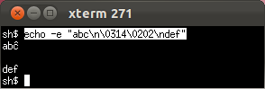
xterm: circumflex on wrong letter.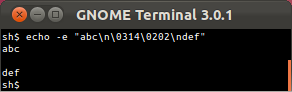
GNOME Terminal: no circumflex at all.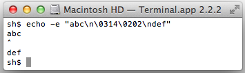
OS X Terminal.app gets it right.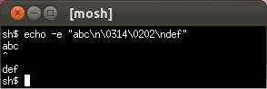
Mosh gets it right too.- ISO 2022 locking escapes
Only Mosh will never get stuck in hieroglyphs when a nasty program writes to the terminal. (See Markus Kuhn's discussion of the relationship between ISO 2022 and UTF-8.)
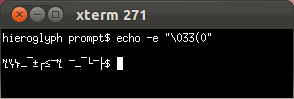
xterm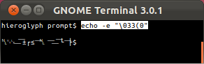
GNOME Terminal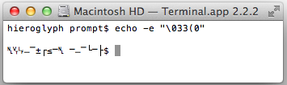
OS X Terminal.app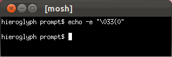
Mosh- Evil escape sequences
Only Mosh and GNOME Terminal have a defensible rendering when Unicode mixes with an ECMA-48/ANSI escape sequence. The OS X Terminal unwisely tries to normalize its input before the vt500 state machine, causing it to misinterpret and become unusable after receiving the following input!* (This also means the OS X Terminal's interpretation of the incoming octet stream varies depending on how the incoming octets are split across TCP segments, because the normalization only looks ahead to available bytes.)
* We earlier wrote that this misbehaving sequence "crashes" the OS X Terminal.app. This was mistaken—instead, Terminal.app interprets the escape sequence as shutting off keyboard input, and because of an unrelated bug in Terminal.app, it is not possible for the user to restore keyboard input by resetting the terminal from the menu.
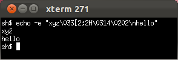
xterm: circumflex on wrong letter.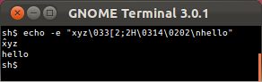
GNOME Terminal's circumflex placement is defensible.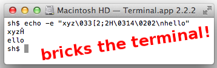
OS X Terminal.app applies circumflex to part of escape sequence, then irretrievably shuts off keyboard input.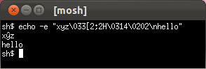
Mosh gets this one right.- Mosh sets IUTF8
In the POSIX framework, the kernel needs to know whether the user is typing in an 8-bit character set or in UTF-8, because in canonical mode (i.e. "cooked" mode), the kernel needs to be able to delete a typed multibyte character sequence from an input buffer. On OS X and Linux, this is done with the "IUTF8" termios flag.) (See diagnostic explaining the need for this flag.)
Mosh sets the IUTF8 flag when possible and stubbornly refuses to start up unless the user has a UTF-8-clean environment. SSH does not set the IUTF8 flag, which can lead to garbage in input buffers.
Instant local echo and line editing
The other major benefit of working at the terminal-emulation layer is that the Mosh client is free to scribble on the local screen without lasting consequence. We use this to implement intelligent local echo. The client runs a predictive model in the background of the server's behavior, hypothesizing that each keystroke will be echoed at the cursor location and that the backspace and left- and right-arrow keys will have their traditional effect. But only when a prediction is confirmed by the server are these effects actually shown to the user. (In addition, by default predictions are only displayed on high-delay connections or during a network “glitch.”) Predictions are done in epochs: when the user does something that might alter the echo behavior — like hit ESC or carriage return or an up- or down-arrow — Mosh goes back into making background predictions until a prediction from the new batch can be confirmed as correct.
Thus, unlike previous attempts at local echo with TELNET and RLOGIN, Mosh's local echo can be used everywhere, even in full-screen programs like emacs and vi.
Real-world benefits
We evaluated Mosh using traces contributed by six users, covering about 40 hours of real-world usage and including 9,986 total keystrokes. These traces included the timing and contents of all writes from the user to the host and vice versa. The users were asked to contribute "typical, real-world sessions." In practice, the traces include use of popular programs such as the bash shell and zsh shells, the alpine and mutt e-mail clients, the emacs and vim text editors, the irssi and barnowl chat clients, the links text-mode Web browser, and several programs unique to each user.
To evaluate typical usage of a "mobile" terminal, we replayed the traces over an otherwise unloaded Sprint commercial EV-DO (3G) cellular Internet connection in Cambridge, Mass. A client-side process played the user portion of the traces, and a server-side process waited for the expected user input and then replied (in time) with the prerecorded server output. We speeded up long periods with no activity. The average round-trip time on the link was about half a second.
We replayed the traces over two different transports, SSH and Mosh, and recorded the user interface response latency to each simulated user keystroke. The Mosh predictive algorithm was frozen prior to collecting the traces and was not adjusted in response to their contents or results.
The results
Cumulative distribution of keystroke response times with Sprint EV-DO (3G) Internet service
Mosh reduced the median keystroke response time from 503 ms to nearly instant (because more than 70% of the keystrokes could be immediately displayed), and reduced the mean keystroke response time from 515 ms to 173 ms. Qualitatively, Mosh makes remote servers "feel" more like the local machine!
Frequently Asked Questions
- Q: Who wrote Mosh?
Mosh was written by Keith Winstein, along with Anders Kaseorg, Quentin Smith, Richard Tibbetts, Keegan McAllister, and John Hood.
- Q: Why another remote-terminal protocol?
Practical latency on the Internet is on the increase, with the rise of bufferbloat and sophisticated wireless links that optimize for throughput over delay. And roaming is more common than ever, now that laptops and handheld devices have largely displaced desktops. SSH is great, but frustrating to use when you want to change IP addresses or have a long-delay link or a dodgy connection.
Moreover, TELNET had some good things going for it — a local-echo mode and a well-defined network virtual terminal. Even today, SSH doesn't properly support UTF-8 end-to-end on a POSIX system.
- Q: Are the mosh principles relevant to other network applications?
We think so. The design principles that Mosh stands for are conservative: warning the user if the state being displayed is out of date, serializing and checkpointing all transactions so that if there are no warnings, the user knows every prior transaction has succeeded, and handling expected events (like roaming from one WiFi network to another) gracefully.
Those don't seem too controversial, but fancy apps like Gmail-in-Chromium or on Android still behave atrociously on dodgy connections or after switching IP addresses. (Have you ever had Gmail leave an e-mail message in "Sending..." for ten hours while merrily retrieving new mail and not indicating any kind of error? Us too.) We think there may be considerable room for improvement in many network user interfaces from the application of these values.
- Q: I'm getting "mosh requires a UTF-8 locale." How can I fix this?
To diagnose the problem, run
localeon the local terminal, andssh remotehost locale. To use Mosh, both sides of the connection will need to show a UTF-8 locale, likeLC_CTYPE="en_US.UTF-8".On many systems, SSH will transfer the locale-related environment variables, which are then inherited by
mosh-server. If this mechanism fails, Mosh (as of version 1.2) will pass the variables itself. If neither mechanism is successful, you can do something likemosh remotehost --server="LANG=en_US.UTF-8 mosh-server"
If
en_US.UTF-8does not exist on the remote server, you can replace this with a UTF-8 locale that does exist. You may also need to set LANG locally for the benefit ofmosh-client. It is possible that the local and remote machines will need different locale names. See also this GitHub ticket.- Q: What does the message "Nothing received from the server on UDP port 60003" mean?
-
This means that
moshwas able to startmosh-serversuccessfully on the remote machine, but the client is not able to communicate with the server. This generally means that some type of firewall is blocking the UDP packets between the client and the server. If you had to forward TCP port 22 on a NAT for SSH, then you will have to forward UDP ports as well. Mosh will use the first available UDP port, starting at 60001 and stopping at 60999. If you are only going to have a small handful of concurrent sessions on a server, then you can forward a smaller range of ports (e.g., 60000 to 60010).Tools like netstat, netcat, socat, and tcpdump can be useful for debugging networking and firewall problems.
This problem can also be the result of a bug in glibc 2.22 that affects programs that link with protobuf and utempter and use aggressive compiler hardening flags. (glibc bugtracker entry, as well as Mosh bugtracker entry.) The problem causes mosh-server to segfault immediately on startup. We believe we have worked around this problem in Mosh 1.2.6, but please report a bug if you find otherwise.
- Q: Why do you insist on UTF-8 everywhere?
We're really not UTF-8 zealots. But it's a lot easier to correctly implement one terminal emulator than to try to do the right thing in a variety of difficult edge cases. (This is what GNU screen tries to do, and in our experience it leads to some very tricky-to-debug situations.) So mosh just won't start up until the user has everything configured for a UTF-8-clean pathway. It may be annoying, but it also probably reduces frustration down the road. (Unfortunately an 8-bit vt220 and a UTF-8 vt220 are different and incompatible terminal types; the UTF-8 goes in underneath the vt220 state machine.)
- Q: How do I use a different SSH port (not 22)?
As of Mosh 1.2, you can pass arguments to
sshlike so:mosh remotehost --ssh="ssh -p 2222"
Or configure a host alias in
~/.ssh/configwith aPortdirective. Mosh will respect that too.- Q: I'm getting 'mosh-server not found'.
Please make sure that mosh is installed on the client, and mosh (or at least mosh-server) is installed on the server you are trying to connect to. Also, the server is expected to be available on your server's default login
PATH, which is not usually true on OS X and BSD servers, or if you install mosh-server in your home directory. In these cases please see the "Server binary outside path" instructions in the Usage section, above.- Q: SSH authenticates using Kerberos tickets, but Mosh asks me for a password.
In some configurations, SSH canonicalizes the hostname before passing it to the Kerberos GSSAPI plugin. This breaks for Mosh, because the initial forward DNS lookup is done by the Mosh wrapper script. To work around this, invoke Mosh as
mosh remotehost --ssh="ssh -o GSSAPITrustDns=no"
This will often fail on a round-robin DNS setup. In that case it is probably best to pick a specific host from the round-robin pool.
- Q: Why is my terminal's scrollback buffer incomplete?
Mosh 1.2 synchronizes only the visible state of the terminal. Mosh 1.3 will have complete scrollback support; see this issue and the others which are linked from there. For now, the workaround is to use screen or tmux on the remote side.
- Q: How do I get 256 colors?
Make sure you are running mosh in a terminal that advertises itself as 256-color capable. (This generally means TERM will be xterm-256color or screen-256color-bce.)
- Q: How do I type C-^, Mosh's default escape character?
On keyboards with the United States layout, this can be typed as Ctrl-Shift-6, or often as Ctrl-6 (this depends on your OS and terminal emulator). On non-US keyboards, it is often hard to find the right key, and sometimes it's not available at all. If your keyboard has a dead key with an accent-circumflex, this is not likely to be the right key. Ctrl-6 sometimes works, though. If you are unable to type this character, you will need to set the
MOSH_ESCAPE_KEYvariable; see the Mosh man page for details.- Q: What is Mosh's security track record so far?
Mosh 1.0 was released in March 2012. As of the release of Mosh 1.2.6 in August 2016, as far as the developers are aware:
- In the last four years, no security vulnerabilities of any kind (major or minor) have been reported in Mosh.
- No major security vulnerabilities have ever been reported in Mosh. We define major security vulnerabilities to include privilege escalation, remote code execution, denial-of-service by a third party, etc.
- Two denial-of-service issues were discovered and fixed in releases in 2012. One issue allowed a mosh-server to cause the mosh-client to spend excess CPU (CVE-2012-2385, fixed in Mosh 1.2.1, released May 2012). Another issue allowed the server host to cause the mosh-client to send UDP datagrams to an incorrect address, foiling its attempt to connect (fixed in Mosh 1.2.2, released July 2012).
- Q: How does Mosh's security compare with SSH's?
We think that Mosh's conservative design means that its attack surface compares favorably with more-complicated systems like OpenSSL and OpenSSH. Mosh's track record has so far borne this out. Ultimately, however, only time will tell when the first serious security vulnerability is discovered in Mosh—either because it was there all along or because it was added inadvertently in development. OpenSSH and OpenSSL have had more vulnerabilities, but they have also been released longer and are more prevalent.
In one concrete respect, the Mosh protocol is more secure than SSH's: SSH relies on unauthenticated TCP to carry the contents of the secure stream. That means that an attacker can end an SSH connection with a single phony "RST" segment. By contrast, Mosh applies its security at a different layer (authenticating every datagram), so an attacker cannot end a Mosh session unless the attacker can continuously prevent packets from reaching the other side. A transient attacker can cause only a transient user-visible outage; once the attacker goes away, Mosh will resume the session.
However, in typical usage, Mosh relies on SSH to exchange keys at the beginning of a session, so Mosh will inherit the weaknesses of SSH—at least insofar as they affect the brief SSH session that is used to set up a long-running Mosh session.
- Q: Does mosh work with Amazon EC2?
Yes, it works great, but please remember to open up UDP ports 60000–61000 on the EC2 firewall.
- Q: How do I tell if mosh is working correctly?
-
After you run
mosh user@server, if successful you will be dropped into your login shell on the remote machine. If you want to check that mosh is being used instead of ssh, try typingCtrl-^ Ctrl-Zto suspend the session (with mosh 1.2.4 or later on the client). Runningfgwill then return. - Q: What's the difference between mosh, mosh-client, and mosh-server? What one do I use?
-
The
moshcommand is a wrapper script that is designed to be the primary way that you use mosh. In most cases, you can simply just replace "ssh" with "mosh" in your command line. Behind the scenes, themoshwrapper script will SSH to the server, start upmosh-server, and then close the SSH connection. Then it will start up themosh-clientexecutable on the client, passing it the necessary information for it to connect to the newly spawnedmosh-serverinstance.In normal usage,
mosh-clientandmosh-serverdon't need to be run directly. - Q: How do I run the mosh client and server separately?
If the
moshwrapper script isn't working for you, you can try running themosh-clientandmosh-serverprograms separately to form a connection. This can be a useful debugging technique.1. Log in to the remote host, and run
mosh-server.It will give output like:
$ mosh-server MOSH CONNECT 60004 4NeCCgvZFe2RnPgrcU1PQw mosh-server (mosh 1.1.3) Copyright 2012 Keith Winstein <mosh-devel@mit.edu> License GPLv3+: GNU GPL version 3 or later <http://gnu.org/licenses/gpl.html>. This is free software: you are free to change and redistribute it. There is NO WARRANTY, to the extent permitted by law. [mosh-server detached, pid = 30261]
2. On the local host, run:
$ MOSH_KEY=key mosh-client remote-IP remote-PORT
where "key" is the 22-byte string printed by mosh-server (in this example, "4NeCCgvZFe2RnPgrcU1PQw"), "remote-PORT" is the port number given by the server (60004 in this case), and "remote-IP" is the IP address of the server. You can look up the server's IP address with "host remotehost".
3. If all goes well, you should have a working Mosh connection. Information about where the process fails can help us debug why Mosh isn't working for you.
- Q: With the mosh-server on FreeBSD or OS X, I sometimes get weird color problems. What's wrong?
This bug is fixed in Mosh 1.2. Thanks to Ed Schouten and Peter Jeremy for tracking this down.
- Q: How do I contribute to mosh?
We welcome your contribution! Please join us in
#moshchannel on Freenode IRC, visit us on GitHub, or emailmosh-devel@mit.edu.- Q: Who helped with mosh?
We're very grateful for assistance and support from:
- Hari Balakrishnan, who advised this work and came up with the name.
- Paul Williams, whose reverse-engineered vt500 state diagram is the basis for the Mosh parser.
- The anonymous users who contributed session logs for tuning and measuring Mosh's predictive echo.
- Nickolai Zeldovich for helpful comments on the Mosh research paper.
- Richard Stallman for helpful discussion about the capabilities of the SUPDUP Local Editing Protocol.
- Nelson Elhage
- Christine Spang
- Stefie Tellex
- Joseph Sokol-Margolis
- Waseem Daher
- Bill McCloskey
- Austin Roach
- Greg Hudson
- Karl Ramm
- Alexander Chernyakhovsky
- Peter Iannucci
- Evan Broder
- Neha Narula
- Katrina LaCurts
- Ramesh Chandra
- Peter Jeremy
- Ed Schouten
- Ryan Steinmetz
- Jay Freeman
- Dave Täht
- Larry Doolittle
- Daniel Drown
- Timo Juhani Lindfors
- Timo Sirainen
- Ira Cooper
- Felix Gröbert
- Luke Mewburn
- Anton Lundin
- Philipp Haselwarter
- Timo J. Rinne
- Barosl Lee
- Andrew Chin
- Louis Kruger
- Jérémie Courrèges-Anglas
- Pasi Sjöholm
- Richard Woodbury
- Igor Bukanov
- Geoffrey Thomas
- Steve Dignam
- HIGUCHI Yuta
- Baruch Siach
Contact
mosh-devel@mit.edu
Mosh development and discussion. Sign up or view archives at https://mailman.mit.edu/mailman/listinfo/mosh-devel.mosh-users@mit.edu
Mosh user discussion and site best practices. Sign up or view archives at https://mailman.mit.edu/mailman/listinfo/mosh-users.#moshchannel on Freenode IRC
You can connect with a Web client, try an irc:// URL, or manually configure your client forirc.freenode.net.At the recommendation of the security community, confidential security-related matters may be sent to:
mosh-security@mit.eduMessages may optionally be encrypted with Keith Winstein's public key:pub 4096R/FE254C69 2012-02-05 [expires: 2017-03-17] Key fingerprint = B1A4 7069 121F 6642 BB3D 7F3E 20B7 283A FE25 4C69